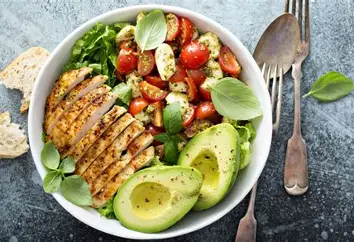

Receitas que Transformam
Projeto de compartilhamento de receitas acessíveis, nutritivas e fáceis de preparar, mostrando que é possível ter uma alimentação equilibrada sem gastar muito.
Como contribuir: a comunidade pode compartilhar receitas, sugestões de preparações econômicas e experiências culinárias.